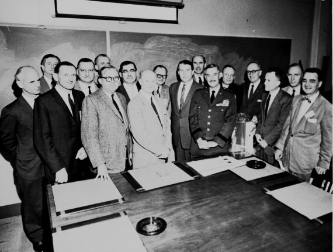
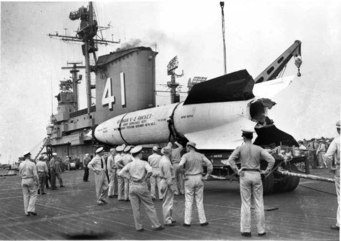
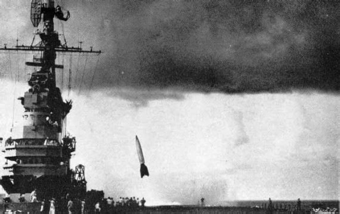

«Фау-2» в Америке
Созданная в Германии баллистическая ракета «Фау-2» оказала сильнейшее влияние на ракетостроение во всех странах мира. Без преувеличения можно сказать, что благодаря этой ракете человечество смогло в конце 1950-х годов вырваться в космос. Не будь ее, человечество сделало бы это гораздо позже. Хотя нельзя забывать о тысячах жителей Лондона и других европейских городов, которым «Фау-2» принесла смерть. И о десятках тысяч узников концлагерей, погибших у конвейера, с которого сходили эти смертоносные «серебристые сигары».
Но коль скоро американские ракетчики активно использовали в своей работе трофейные «Фау-2», есть смысл рассказать подробно о том, каким образом эти ракеты попали в Америку, и как с ними работали по ту сторону океана. Тем более что это весьма важная веха в истории американской космонавтики.
О том, что немецкие конструкторы ведут работы по созданию ракет дальнего действия, американская, английская и советская разведка узнали еще в 1943 году. А может быть и раньше, хотя упоминаний об этом в рассекреченных к настоящему времени документах встретить не удалось. Как бы то ни было, еще когда пушки грохотали на полях сражений, в Германию в погоне за секретами Третьего рейха с запада и востока устремились сотрудники спецслужб. Начался дележ научного и технологического «наследства» нацистского режима.
Операция, которую активно осуществляли представители американского разведывательного ведомства, получила наименование «Оверкаст» (overcast– ненастье). Позже ее переименовали в операцию «Пэйперклип» (piperclip– скрепка). Целью был поиск всего, что, так или иначе, касалось ракетного и авиационного производства, фармацевтической и химической промышленности, разработок в области электроники и приборостроения. Но главной задачей был вывоз в США ученых, которые работали в этих областях.
Первоначально планировалось лишь допросить ученых и инженеров, а затем возвратить их на родину. Однако уже первые беседы показали, что необходим иной путь взаимодействия. Выгоднее было создать условия для работы немецких специалистов в Новом Свете, чем самостоятельно повторять уже пройденный ими путь. Это было и дешевле, да и сроки освоения передовых технологий существенно сокращались.
Правда, существовала небольшая проблема. Подобное решение было незаконно – американское законодательство запрещало иммиграцию членов нацистской партии в США, а три четверти заинтересовавших разведку специалистов состояли в ней. Но чего не сделаешь ради высших государственных интересов.
Поэтому немцы находились в Америке сначала нелегально, а в сентябре 1946 года президент Гарри Трумэн разрешил привлекать их к работам в интересах государственной безопасности США. Уже началась «холодная война», грозившая перерасти в «горячую», поэтому и было решено забыть многие юридические нормы и моральные принципы. И хотя еще долго немецкие специалисты находились в США на «птичьих правах», они активно привлекались к суперсекретным операциям Центрального разведывательного управления, таким как «МК-Ультра», «Артишок», «Миднайт Климакс», в ходе которых изучалось воздействие химических, бактериологических и радиологических средств на психику человека, к разработке разведывательного самолета U-2, к созданию химического и бактериологического оружия, к разработке системы противовоздушной обороны Североамериканского континента, к разработке ракет дальнего радиуса действия.
Лишь в 1955 году 760 ученым было предоставлено американское гражданство, и они смогли открыто войти в научное сообщество. Я не буду писать обо всех специалистах, которые оказались в Америке. Авиаторов, ядерщиков, химиков, биологов оставлю другим авторам. Ограничусь только ракетчиками, которые оказались в небольшом провинциальном городке Хантсвилл в штате Алабама. Фактически немцы превратили этот захолустный городок плантаторского юга в один из ведущих технологических центров США, за что жители города им чрезвычайно признательны. Там они оставили о себе добрую память, чего нельзя сказать о жителях многих городов Европы, которые на себе испытали действие ракетного оружия Третьего рейха.
Коллектив специалистов-ракетчиков, которые были собраны в Алабаме, возглавил Вернер фон Браун, сдавшийся американцам 2 мая 1945 года. Впоследствии их стали именовать «командой фон Брауна». Они сделали чрезвычайно много для становления ракетной техники в США. Хотя на первом этапе своей вынужденной эмиграции к важнейшим работам их не допускали, зато потом были «Юпитеры», первый американский спутник и высадка человека на Луне. Но все это будет потом, а в конце 1940-х годов немцы еще только адаптировались на американском континенте.
По данным специалистов, команда фон Брауна насчитывала 118 человек. Когда пишут об этом периоде истории американской космонавтики, обычно приводят только численность коллектива и упоминают самых ярких его представителей. Я же хочу перечислить всех, кто оказался вместе с фон Брауном в Хантсвилле.
Итак, вот кто вошел в команду фон Брауна: Херберт Акстер, Вильхельм Ангеле, Антон Байер, Рудольф Байхель, Эрих Балл, Оскар Баушингер, Германн Бедюрфтих, Херберт Бергелер, Герд де Бик, Йозеф Боэм, Вернер фон Браун, Магнус фон Браун, Вальтер Бурозе, Теодор Буххольд, Карл Вагнер, Фриц Вандерзее, Хуго Вердеманн, Херман Виднер, Вальтер Висманн, Альбин Виттманн, Эрнст Гайслер, Вернер Генгельбах, Дитер Грау, Херберт Грюндель, Ханс Грюне, Курт Дебус, Курт Диппе, Вернер Добрик, Конрад Донненберг, Герхард Драве, Фредерик Дуэрр, Фредерик Дхом, Карл Зендель, Вернер Зибер, Эрих Каших, Эрнст Клаусс, Йоханн Клейн, Густав Кролль, Вернер Кюрц, Герман Ланге, Ханс Линденберг, Ханс Линденмайер, Курт Линднер, Ханнес Люрсен, Карл Мандель, Ханс Маус, Хельмут Мерк, Хайнц Миллингер, Ханс Мильде, Рудольф Миннинг, Йозеф Михель, Вильям Мрацек, Фриц Мюллер, Йоахим Мюлнер, Макс Новак, Эрих Нойберт, Курт Нойхефер, Ханс Палаоро, Курт Патт, Ганс Пауль, Теодор Поппель, Роберт Пэц, Герхард Райзих, Вальтер Ридель, Эберхард Риис, Вернер Росински, Людвиг Рот, Генрих Роте, Артур Рудольф, Бернхард Тессманн, Вернер Тиллер, Адольф Тиль, Артур Урбански, Альфред Финцель, Ханс Фихтнер, Эдвард Фишель, Карл Флайшер, Теодор Фове, Вернер Фосс, Ханс Фредерих, Херберт Фюрманн, Карл Хагер, Карл Хаймбург, Гюнтер Хауколь, Эмиль Хеллебрант, Герхард Хеллер, Бруно Хельм, Альфред Хеннинг, Хельмут Хейльцер, Рудольф Хелкер, Гюнтер Хинце, Отто Хиршлер, Отто Хоберг, Ханс Хозентлен, Бруно Хойзингер, Оскар Холдерер, Хельмут Хорн, Дитер Хуцель, Ханс Хютер, Альберт Цайлер, Йохим Цинкель, Хельмут Цойке, Хайнц Шарновски, Фридерих Шварц, Вальтер Швидецки, мартин Шиллинг, Рудольф Шлитт, Хельмут Шлитт, Клаус Шойфелен, Эберхард Шпон, Эрнст Штайнхофф, Вольфанг Штойрер, Эрнст Штулингер, Альберт Шулер, Вильям Шульце, Отто Эйзенхардт, Вильхельм Юнгерт, Вальтер Якоби.
Уф! Еще раз пересчитаем… Да, ровно 118! Единственное, в чем я мог ошибиться, так это в правильном переводе с немецкого на русский язык имен и фамилий. Надеюсь, что неточности, если они есть, не очень существенны.
Но немецкие специалисты-ракетчики были лишь частью «добычи» американской разведки. Остальное составляла техническая документация, оборудование и детали уже изготовленных ракет «Фау-2». Американцы собрали все, что только смогли, и незамедлительно переправили в США. Набралось почти три сотни железнодорожных вагонов. «Иногда этот сбор «трофеев» напоминал обыкновенное воровство. Например, если американские войска «по ошибке» занимали те районы, которые должны были контролироваться советскими оккупационными властями, они использовали свое «временное пребывание» на чужой территории для захвата и вывоза за разграничительную линию самого ценного оборудования, документов. То, что не успевали увезти, преднамеренно портили.
Также было и со специалистами, которых переправляли в западную зону оккупации. Чаще всего, это происходило без ведома советских властей.
Программа работ предполагала не только изучение техники и освоение немецких технологий, но и проведение испытательных пусков. Эти эксперименты являются самой интересной частью американской ракетной программы конца 1940-х – начала 1950-х годов, поэтому я хочу рассказать о ней максимально подробно. Но прежде о том месте, откуда запускали «Фау-2».
В качестве стартовой площадки был выбран пустынный район штата Нью-Мексико. Теперь он широко известен как полигон Уайт Сэндз (white sands– белые пески»). Этот район был облюбован специалистами-ракетчиками по тем же соображениям, которыми руководствовались специалисты-атомщики, выбирая место проведения испытания первой атомной бомбы. Большие открытые участки ровной местности с плохими почвами и малочисленным населением создавали благоприятные условия для создания здесь ракетного полигона. Уайт Сэндз обладал и рядом других преимуществ. Местность была сухой, но с достаточным количеством источников воды, что позволяло эксплуатировать полигон круглый год. Неподалеку находились горы, где можно было расположить радиолокаторы и посты визуального наблюдения. Полигон не пересекала ни железная дорога, ни авиатрасса. Имелось только одно, и притом не очень загруженное, шоссе. Короче говоря, выбранное американцами место можно назвать идеальным, если не считать, что размеры полигона были относительно невелики – 280 километров с севера на юг и 65 километров с востока на запад.
Официальной датой создания полигона Уайт Сэндз считается 20 февраля 1945 года, когда было подписано соответствующее распоряжение министра обороны США. Хотя фактически свою историю он ведет еще от Роберта Годдарда.
После постройки первоочередных объектов – колодцев, казарм, мастерских, сборочных залов, линий связи и тому подобного – в центре полигона была сразу же сооружена бетонная стартовая площадка. На расстоянии 100 метров от нее инженеры-фортификаторы выстроили блокгауз, который стал своего рода нервным центром всего полигона, где сходились десятки линий связи. Толщина стен этого сооружения, имевшего в плане почти прямоугольную форму, была свыше 3 метров. Визуальное наблюдение за ракетами велось с помощью перископов.
К концу июля 1945 года, когда на Уайт Сэндз стали прибывать первые эшелоны с узлами и агрегатами «Фау-2», был сооружен стенд для испытания полностью собранных ракет. Он расположился на обрыве холма и представлял собой прочную бетонную шахту с отверстием в нижней части для выпуска газовой струи в горизонтальном направлении. Ракета помещалась сверху и удерживалась на месте с помощью прочной стальной конструкции, снабженной устройством для измерения силы тяги ракетного двигателя.
Однако первой ракетой, запущенной на новом полигоне, была не трофейная «Фау-2», а американская ракета «Капрал». И произошло это на полгода раньше, чем немецкие ракеты начали летать над Америкой. Об этом эпизоде я уже рассказал в предыдущей главе.
Так как американцам досталось довольно много всевозможных деталей от немецких ракет, да еще и немецкие специалисты, которые это оружие разрабатывали, то программа летных испытаний была весьма обширна и предполагала проведение множества пусков с различными задачами полета. Причем большое место отводилось научным исследованиям. В первую очередь – изучению верхних слоев атмосферы.
Подготовку ракет к запуску осуществляли в основном немецкие специалисты из команды фон Брауна. Участвовали в этих работах и американцы, но это участие было весьма ограниченным. Можно сказать, что выполняли они только «наблюдательные и познавательные» функции. Короче говоря, пытались выяснить все, что можно было использовать при разработке собственных ракет, чем американцы занимались параллельно с освоением «Фау-2». Но к тем работам немцев не подпускали на пушечный выстрел.
Первая собранная в США «Фау-2» была использована для проведения стендовых испытаний, которые состоялись на Уайт Сэндз 15 марта 1946 года. Двигатель проработал 57 секунд и продемонстрировал фактическую готовность ракет к полетам.
Их начали спустя месяц, когда 16 апреля в 14 часов 47 минут по местному времени «Фау-2» за номером 2 ушла в небо. В ходе полета, кроме решения технических вопросов, предполагалось провести изучение космического излучения. Соответствующее оборудование было подготовлено специалистами Лаборатории прикладной физики из Университета Джонса Хопкинса.
Как это обычно бывает, в первом пуске достигнуть успеха не удалось. Спустя всего 19 секунд после старта ракета внезапно развернулась на 90 градусов и устремилась на восток. Прежде чем устройство аварийной отсечки топлива вступило в действие, наблюдатели заметили, что один из стабилизаторов разрушился. Ракета упала неподалеку от стартовой позиции.
Для того чтобы предотвратить подобные аварии, все графитовые газовые рули впоследствии просвечивались рентгеновскими лучами, а затем покрывались слоем картона, который быстро сгорал после пуска маршевого двигателя.
Второй испытательный пуск, осуществленный 10 мая того же года, оказался успешным. Максимальная высота, которую в том рейсе достигла ракета за номером 3, составила 112,9 километра. Дальность полета составила 50 километров. Сопутствующую программу научных исследований подготовили все те же специалисты Университета Джонса Хопкинса по заказу компании «Дженерал электрик».
За майским пуском следили не только специалисты, но и представители прессы, которых пригласили на полигон. Этот пуск стал первым документально подтвержденным средствами контроля фактом преодоления условной границы между атмосферой и космосом (100 километров). Все пуски из Пенемюнде, когда боевые «Фау-2» залетали в космос, ничем, кроме расчетов, не подтверждены. Хотя эти расчеты делали специалисты, в компетентности которых сомневаться не приходится.
Следующий запуск «Фау-2» состоялся с Уайт Сэндз 29 мая того же 1946 года. Программа пуска полностью повторяла программу предыдущего полета, да и его результаты оказались практически точным повторением той миссии. Разница не принципиальная: высота подъема составила 112,4 километра (на 500 метров меньше), дальность – 60 километров (на 10 километров больше).

Члены команды Вернера фон Брауна
Пуск «Фау-2» под номером 5 был произведен 13 июня. И хотя основные параметры полета (высота 117,7 километра, дальность 64 километра) мало чем отличались от майских стартов, сопутствующая программа была иной. На этот раз проводилось изучение солнечного излучения и замерялись параметры верхних слоев ионосферы. Необходимое для этого оборудование создали специалисты Лаборатории Военно-морских сил (ВМС) США. Заказчиком экспериментов вновь выступила компания «Дженерал электрик».
Не менее успешно прошел пуск 28 июня ракеты под номером 6. На этот раз специалисты Лаборатории ВМС США установили в головной части ракеты приборы для изучения космического излучения и солнечной радиации, а также для замеров давления и температуры верхних слоев земной атмосферы. Высота подъема ракеты при этом составила 108,1 километра.
Был удачным и следующий пуск, состоявшийся 9 июля. Хотя во время полета произошло отклонение от заданной траектории, но заметили это только те, кто обслуживал следящее устройство. Для всех остальных миссия была полностью успешной.
А вот восьмой запуск, как и первый, завершился неудачей. Стартовавшая 19 июля «Фау-2» выполнить свою задачу не смогла. Ракета повела себя явно ненормально и взорвалась через 27 секунд после старта на высоте пять с половиной километров. Причиной взрыва явилась авария турбонасосного агрегата, один из подшипников которого, работающий на перекачке жидкого кислорода, был густо смазан маслом. Возгорание этого масла и привело к взрыву ракеты.
Впоследствии с маслом стали работать крайне осторожно и больше таких инцидентов на Уайт Сэндз не фиксировалось. Другие разбившиеся ракеты гибли по иным причинам.
Следующую ракету запустили 30 июля. Она поднялась на высоту 161,9 километра, что на тот момент было рекордным достижением. Да и по дальности она улетела на 108 километров, что также было улучшением предыдущих показателей. Кроме привычных экспериментов по изучению космического излучения, в ходе полета «девятого номера» проводились и биологические исследования. Их подготовили специалисты Гарвардского университета. Возвращать живые организмы на Землю тогда еще не умели, поэтому ограничились запуском самых простейших, для которых «посадочный удар» был не страшен, и в обломках головной части ракеты всегда можно было найти материал для дальнейшего изучения. Как сообщают, эксперименты прошли успешно, хотя детальных подробностей «биологического рейса» нигде так и не опубликовали.
Первый период пусков «Фау-2» с Уайт Сэндз характерен тем, что успехи чередовались с неудачами. Причем какой-либо периодичности при этом не зафиксировано.
Так, предпринятые 15 и 22 августа пуски ракет под номерами 10 и 11, закончились авариями, как и пуски ракет с номерами 2 и 8. Эксперименты для «десятки» готовили специалисты Принстонского университета, а для «одиннадцатой» – военные из научно-исследовательского департамента ВВС США.
При испытании 15 августа уже через 13,5 секунды после старта ракета повела себя странным образом. Судя по всему, вышла из строя система управления, которая заставила сервопривод одного из газовых рулей отклонить его в крайнее положение. В связи с этим некоторое время остальные газовые рули работали с перегрузкой, компенсируя неправильное положение первого руля. Спустя 20 секунд после взлета, когда наземные службы убедились, что нет возможности устранить неисправность, двигатель был выключен, и ракета упала на землю.
А ракета под номером 11 развернулась на восток спустя 4 секунды после старта и пошла над землей на высоте около 100 метров по траектории с незначительным восхождением. В нескольких сотнях метров от стартовой позиции она уткнулась в землю и взорвалась.
Два подряд неудачных пуска заставили специалистов подкорректировать программу испытаний. Сделано это было для того, чтобы разобраться в причинах аварий и попытаться исключить их повторение в будущем. Поэтому следующий старт «Фау-2» состоялся только 10 октября. Судя по результатам, время было потрачено не зря. В программу этого полета входило изучение космического и солнечного излучения, замеры давления и температуры на больших высотах, а также биологические эксперименты. Все это было выполнено. Также был установлен новый рекорд высоты подъема ракеты – 174,2 километра.
Ракета с «несчастливым» тринадцатым номером успешно отлетала 24 октября. Правда, высота подъема была не такой большой, как у «двенадцатой», но зато впервые на борту была установлена фотокамера, которая с высоты в 100 километров отсняла 100 тысяч квадратных километров земной поверхности. Аппаратуру для съемки изготовили специалисты Университета Джонса Хопкинса.
А вот четырнадцатой «Фау-2», которая стартовала 7 ноября, не повезло. Через 4–5 секунд после старта ракета неожиданно «клюнула» носом, потом выровнялась, еще через 2–3 секунды наблюдатели заметили еще один «клевок». Прежде чем кто-либо успел сообразить, что произошло с «Фау-2», она развернулась носовой частью на юг и, приобретя хорошую устойчивость, с ревом прошла в сторону расположения военного гарнизона в общем направлении на Эль-Пасо. Оператор, управлявший ракетой, точно приземлил ее за пределами военного городка.
До конца 1946 года с Уайт Сэндз были осуществлены еще три пуска «Фау-2» (21 ноября, 5 и 17 декабря). Все они считаются успешными. В ходе полетов проводилось изучение космического излучения, собирались метеорологические данные, исследовались верхние слои земной атмосферы. Высоты, которые при этом достигали ракеты, составили 102, 153 и 184 километра соответственно.
При описании каждого нового старта я обращаю внимание, в первую очередь, на сопутствующие эксперименты, которые проводились в полете, и совсем не выделяю техническую составляющую миссий. Естественно, что специалистов интересовали проблемы работоспособности всех систем ракет, и наземного оборудования, и многое другое. Но все эти данные столь специфичны, что, думаю, мало найдется охотников читать о гирорулях, соплах, газотурбинах и тому подобном. Поэтому я стараюсь как можно реже упоминать все эти термины и лишь констатирую, что такие эксперименты имели место во время всех пусков и именно их можно и нужно считать основными для всей программы. Лишь решив эти вопросы можно было «научить» ракеты летать.
Наступление нового 1947 года не стало каким-либо рубежом для испытателей. Пуски «Фау-2» продолжалась в прежнем ритме.
Ракета под номером 18 стартовала 10 января. Об этом пуске много не расскажешь – максимальная высота 116,5 километра, изучение космического излучения по программе Лаборатории ВМС США. Вот, в общем-то, и все.
Да и для ракеты под номером 19, запущенной 23 января, у меня найдется мало слов. Разве что можно обратить внимание на максимальную высоту, на которую она поднялась – 50 километров. По сравнению с подавляющим числом предыдущих рейсов, очень мало. Однако пуск не был аварийным. Просто именно такой высоты требовала программа полета, составленная специалистами компании «Дженерал электрик». А кто платит деньги, тот и заказывает музыку. Поэтому «девятнадцатая» до границы атмосферы и космоса не добралась.
20 февраля американцы приступили к пускам «Фау-2» по программе «Блоссом», предусматривавшей отработку методики отделения возвращаемого отсека с образцами различных материалов и простейшими живыми организмами, а также его последующего спуска на Землю на парашюте. Но основной задачей было, конечно же, стремление научиться отделять головные части боевых ракет при их приближении к цели. Тогда этого не умели делать ни в США, ни в СССР.
Ракета под номером 20 смогла достичь высоты 109,7 километра. Были проведены исследования верхних слоев земной атмосферы, фотосъемка поверхности Земли, биологические эксперименты. Отделение возвращаемого отсека также удалось осуществить, хотя прошла сия операция не безупречно. Но начало процессу было положено. Что в той ситуации было гораздо важнее.
Следующую ракету пустили 7 марта. Это был полет по программе вертикального зондирования атмосферы. Ракета достигла высоты в 162,9 километра. Новым для этой миссии стало то, что впервые в мировой практике была проведена фотосъемка земной поверхности с высоты в 100 миль (160 километров). Это был определенный шаг вперед, позволивший получить массу полезных сведений о природе. А о том, сколько данных принесли дальнейшие шаги в этом направлении, надо рассказывать отдельно и применительно не только к США.
Ракету под номером 22 пустили в День смеха, 1 апреля. Но «первоапрельская шутка» оказалась удачной: ракета поднялась на высоту 129,5 километра. Также были проведены ставшие к тому моменту привычными исследования верхних слоев атмосферы.
Все повторилось и 9 апреля, когда стартовала ракета под номером 23.
А вот пуск 17 апреля был в своем роде уникальным. Во время полета были проведены испытания прямоточного воздушнореактивного двигателя, созданного специалистами компании «Дженерал электрик» для использования в проектируемой ракете «Гермес-В». Изучалось поведение ракеты на скоростях от 0,7 до 1,3 скорости звука. В целом испытания прошли успешно.
Новый испытательный пуск «Фау-2» (под номером 26) состоялся 15 мая. Его основной целью являлось проведение исследований солнечной радиации и верхних слоев земной атмосферы. Этот полет признан провальным, так как не удалось провести практически ни один из запланированных экспериментов. В какой-то момент ракета вышла из-под контроля, но отсечки двигателя не произошло, и она упорно стремилась вверх, пока не израсходовала все топливо. Потом она упала восточнее города Аламогордо. Максимальная высота подъема ракеты в тот день составила 135,5 километра.
Кстати, с этого полета в нумерации «Фау-2», запущенных с полигона Уайт Сэндз, начинается некая путаница. Следующие ракеты не обязательно носили номер, совпадающий с порядковым номером их использования. Связано это было с тем, что имевшиеся в распоряжении американцев изделия к тому времени начали элементарно «стариться». Поэтому и пускали их не в том порядке, в каком собирали, а в том, в каком это позволяло делать их техническое состояние. Поэтому за номером 24 последовал номер 26. А за ним и вовсе номер 29, который попытались запустить 10 июля. В ходе того полета должны были изучаться верхние слои атмосферы, проводиться метеорологические наблюдения, а также подготовленные специалистами Гарвардского университета биологические эксперименты. Но миссия завершилась аварией ракеты. Она смогла подняться только на 16 километров, когда заниматься исследованиями время еще не пришло.
В том же месяце, 29 числа, состоялся еще один полет, который оказался успешным. Были проведены исследования космического и солнечного излучений, фотографирование земной поверхности. Все эксперименты были подготовлены в Лаборатории прикладной физики Университета Джонса Хопкинса.
Следующий рейс «Фау-2» состоялся 9 октября. Отличительной особенностью его стал сбор данных о распределении температур на корпусе ракеты при переходе через звуковой барьер и при движении с несколькими скоростями звука. В тот раз ракете удалось разогнаться до полутора километров в секунду.
А вот 20 ноября экспериментаторов постигла очередная неудача. В ходе полета предполагалось изучить верхние слои земной атмосферы, а также провести технологические эксперименты для компании «Дженерал электрик». Но преждевременное отключение двигателей не позволило преодолеть высоту 27 километров. Цели пуска так и не были достигнуты.
До конца 1947 года состоялся еще один пуск «Фау-2» с Уайт Сэндз. Это произошло 8 декабря в рамках уже упоминавшейся программы «Блоссом». Как и во время первого рейса по этой программе, состоявшемся ранее в том году, отделение возвращаемого контейнера, хотя и произошло, но не было признано идеальным. То есть американцам и немцам из команды фон Брауна еще предстояло работать и работать. Хотя остальные задачи по замеру уровней космического и солнечного излучения были выполнены.
Наступивший 1948 год по интенсивности запусков «Фау-2» был сравним с двумя предыдущими (1946 год – 16 стартов, 1947 год – 13 стартов, 1948 год – 12 стартов). Программа исследований была начата 22 января запуском ракеты под номером 34. Сам старт стал тридцатым в рамках испытательной программы на североамериканском континенте. Этот полет от многих предыдущих ничем особенно не отличался, поэтому я укажу только высоту, которая была достигнута, – 159,7 километра, – опуская иные подробности того рейса.

«Фау-2» на палубе авианосца ««Мидуэй»
Пуск ракеты под номером 36 состоялся 6 февраля 1948 года по заявке компании «Дженерал электрик». В ходе полета предстояло замерить параметры верхних слоев земной атмосферы и проверить эффективность работы электронных систем, создаваемых для американской армии. Программа полета была выполнена полностью, а максимальная высота, достигнутая ракетой, составила 111,3 километра.
Следующий полет также должен был состояться в интересах компании «Дженерал электрик». В программу пуска входило изучение магнитного поля Земли, измерение параметров верхних слоев атмосферы и многое другое. Но провести какие-либо исследования не удалось – ракета под номером 39 потерпела аварию на начальном участке полета и, достигнув высоты 5,5 километра, рухнула на землю.
Допущенные 19 марта ошибки удалось исправить достаточно быстро, и следующий рейс, состоявшийся 2 апреля, прошел успешно. Ракета под номером 25, последняя из первой серии «Фау-2», собранных в США, смогла подняться на высоту 144,4 километра. Были проведены исследования верхних слоев земной атмосферы, замерены уровни солнечного и космического излучений на большой высоте. Все эксперименты готовили специалисты Научно-исследовательской лаборатории ВМС США.
Они же были заказчиками и следующего пуска, который состоялся 19 апреля. Однако на этот раз моряков подстерегала неудача. Ракета с номером 38 смогла подняться только до высоты 56,1 километра, после чего возвратилась «в родные пенаты». До начала измерений оставалось всего несколько секунд, которых экспериментаторам не хватило.
Программу полета следующей ракеты составляли в Лаборатории прикладной физики Университета Джонса Хопкинса. К тому времени измерения параметров земной атмосферы, изучение солнечного и космического излучений уже стали стандартной процедурой и входили в полетное задание всех «Фау-2», стартовавших с Уайт Сэндз. Так было и при пуске 27 мая. Правда, дополнительно установили фотокамеру, с помощью которой отсняли земную поверхность и облачный покров с высоты в 140 километров.
А вот следующий старт «Фау-2», осуществленный 11 июня, выпадал из общего ряда пусков, ставших к тому времени привычными для обитателей полигона. На этот раз, кроме научного оборудования, на борту ракеты размещалась кабина, в которую поместили обезьяну – Альберта I. Он стал первым живым существом, «заброшенным» на большую высоту. Ракета под номером 37 поднялась на высоту 62,4 километра, после чего начался спуск головной части на Землю.

Пуск «Фау-2» с палубы авианосца «Мидуэй»
Как и планировалось, на высоте в несколько километров был выпущен парашют, и контейнер плавно опустился на земную твердь. Однако обезьяна погибла – на высоте в десятки километров произошла разгерметизация кабины и животное задохнулось. Это была первая, но, увы, не последняя смерть живого существа от удушья во время заатмосферной миссии. Точно так же через три года в Советском Союзе погибли собаки Мишка и Чижик. А в 1971 году погиб экипаж корабля «Союз-11» – Георгий Добровольский, Владислав Волков и Виктор Пацаев.
И еще несколько слов о полете Альберта I. Для экспериментов были выбраны несколько приматов, которых окрестили «группой Альберт». Собственных имен обезьянам не давали. Лишь во время очередного рейса в космос их нумеровали, чтобы отличить друг от друга. Поэтому в истории космонавтики они проходят, как Альберт I, Альберт II и так далее. О миссии Альберта I я уже рассказал, а о других речь еще впереди.
Второй полет обезьяны состоялся спустя год после первого эксперимента, поэтому пока вернемся к беспилотным пускам. Следующий из них состоялся 26 июля 1948 года.
Главной его отличительной особенностью являлось то, что программа полета была скоординирована с программой полета ракеты «Аэроби», запущенной с полигона Уайт Сэндз двумя часами ранее. Предполагалось, что максимальная высота, которую достигнут ракеты, будет одинаковой. Тогда бы удалось получить динамику изменения параметров земной атмосферы с течением времени, что было очень важно для составления стандартной модели. Но хотя оба полета прошли успешно, ошибки в расчетах привели к тому, что «Аэроби» достигла высоты 112,7 километра, а «Фау-2» поднялась только до 87,1 километра. Однако и этот результат был неплохим достижением.
Следующую «Фау-2» (под номером 43) запустили 5 августа. На этот раз ограничились стандартным набором задач: измерение параметров атмосферы (температура, влажность, давление), изучение космического и солнечного излучений, фотографирование земной поверхности. Может быть, все удалось сделать именно потому, что не стремились к необыкновенным результатам. Да и ракета поднялась довольно высоко – до 166,1 километра.
До конца 1948 года «Фау-2» с Уайт Сэндз стартовали еще три раза: 3 сентября, 18 ноября и 9 декабря. Первые два пуска были успешными, а вот во время третьего случилась небольшая неприятность с двигателем. В результате удалось достигнуть высоты только в 107 километров, гораздо меньшей, чем планировалось.
Наступивший 1949 год стал последним, когда интенсивность испытательных пусков «Фау-2» можно назвать высокой. В течение 12 месяцев были запущены 10 ракет. Но программа испытаний трофейной техники была уже на излете. На смену немецким ракетам спешили американские. Именно поэтому специалисты сосредоточились в том году на решении актуальных для них задач, а именно на проблеме отделения головных частей ракет и их возвращения на Землю, а также на изучении поведения живых организмов в условиях ракетного полета. Примечательны три полета с обезьянами на борту. О них, а также еще об одной аварии, я и расскажу.
Сначала про обезьян.
14 июня 1949 года покорять Вселенную на борту «Фау-2» с номером 47 отправился Альберт II. Со стороны казалось, что полет прошел нормально: ракета поднялась на высоту 133,9 километра, в нужное время отделилась кабина с животным, вовремя раскрылся парашют. Да и приземление прошло вроде бы благополучно. Однако когда медики вскрыли кабину, они были вынуждены констатировать смерть животного. То ли удар о землю был слишком сильным, то ли Альберт II не выдержал стресса…
Третий полет с обезьяной на борту состоялся 16 сентября того же года. И вновь исследователей ждала неудача. На этот раз Альберт III погиб в самом начале эксперимента – ракета поднялась на высоту 4,2 километра, после чего произошла авария.
И только четвертый полет обезьяны окончился благополучно. Но успешным был именно полет, а не его последствия. 8 декабря 1949 года «Фау-2» под номером 31 стартовала с полигона Уайт Сэндз, поднялась на высоту 130,6 километра, а потом кабина на парашюте мягко приземлилась в пустынных районах штата Нью-Мексико. К радости медиков животное было живо и позволило им провести столь долгожданные исследования. Правда, не в полном объеме – спустя пару дней у Альберта IV неожиданно остановилось сердце. Вероятно, обезьяна испытала столь сильное потрясение от перегрузок и невесомости, что после возвращения домой жизненных сил хватило совсем ненадолго.
Больше обезьяны на «Фау-2» в космос не летали.
А теперь о неудачном пуске 1949 года. Авария произошла 5 мая во время полета ракеты с номером 46. Спустя несколько секунд после отрыва от стартового стола произошло преждевременное отключение двигателя, и ракета рухнула на землю в 2,2 километра от места старта. Расследование показало, что основной причиной этого были не конструктивные дефекты, а «усталость металла». Все-таки этому экземпляру «Фау-2» к моменту старта исполнилось пять лет, а конструкторы Пенемюнде проектировали ракеты для их немедленного применения, а не длительного хранения. Поэтому результат вполне закономерен.
В 1950 году было запущено всего три «Фау-2». Два полета, состоявшиеся 17 февраля и 31 августа, прошли удачно. А вот 26 октября удалось достигнуть высоты только 8 километров, хотя было запланировано изучение верхних слоев атмосферы.
Следующий, 1951 год, стал последним годом, когда с Уайт Сэндз стартовали немецкие ракеты. Было осуществлено четыре пуска. Все они закончились авариями.
Первая из них случилась 18 января с ракетой под номером 54. Тогда предполагалось изучить солнечную радиацию. Но какие данные можно было получить, если двигатель отключился практически сразу после старта, подняв ракету всего на два километра?
Аналогичным результатом завершился пуск 19 марта. Вновь произошло преждевременное выключение двигателя, и ракета поднялась на высоту только в 3 километра.
А попытка запуска 14 июня очередной «Фау-2» (с номером 55) вообще завершилась взрывом на стартовой позиции.
19 сентября 1952 года. Последний пуск ракеты «Фау-2» в США. Обычно комом получается только первый блин. У американцев же и последний стал таковым – вновь преждевременное отключение двигателя и лишь 7 километров подъема над поверхностью Земли.